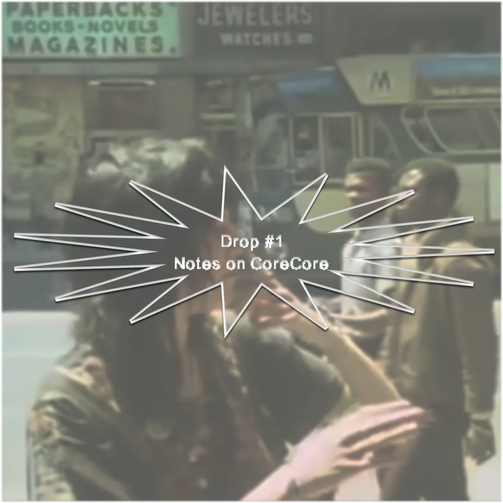
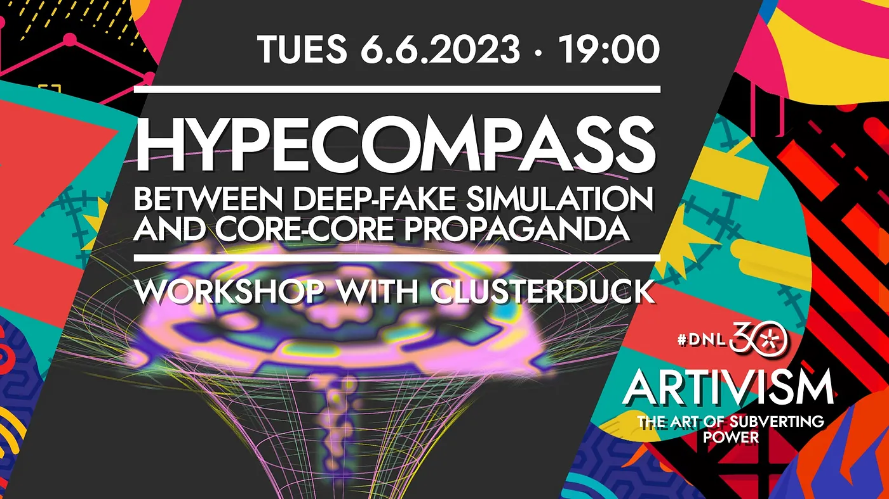
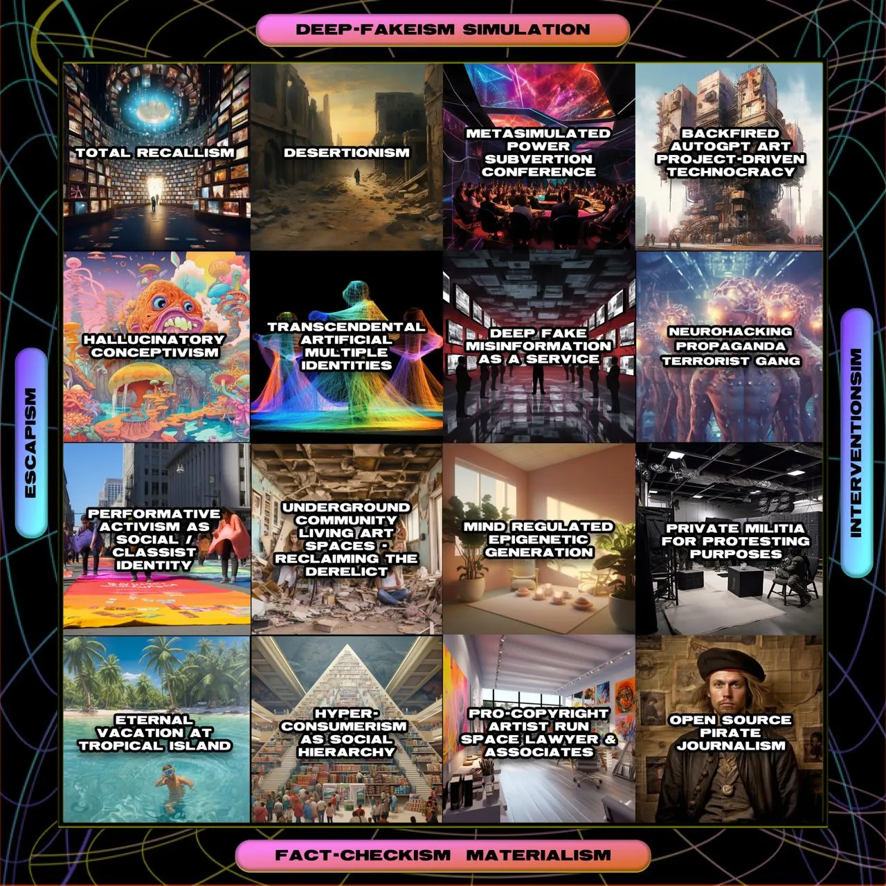

Drop #1 · June 9, 2023 · 9 min read
GenZ at the end of times

Hey everyone (▰˘◡˘▰)
Welcome to the second episode of this freestyle newsletter where I am going to share some basic considerations on CoreCore, a bizarre trend coming from TikTok’s darkest abysses. I think that I first heard about this wave around November of the last year, probably through someone in the art-tech-US-Berlin bubble (either from New Models or Shumon Basar). I was thrilled, I wanted to write something about it but then life happened and I forgot. Flash forward to this week. On Wednesday, I participate in an event organized by the collective Clusterduck, an interdisciplinary research unit based between Italy and Germany, exploring digital subcultures, memes, and Internet symbology. Their work has always been a great inspiration for me and I was delighted to finally participate in real life in something that they organized. What was this something? A workshop with the weird-ass name Hypecompass: Between Deep Fake Simulation and Corecore Propaganda, intended to be the opening act of the upcoming conference Artivism. The Art of Subverting Power by the always-excellent Berlin-based NGO Disruption Network Lab.

The evening was a funny moment of imagination through collective meme-making and the final output is this hilarious, speculative Political Compass on the future of art and activism.

But back to CoreCore. CoreCore was mentioned by Silvia from Clusterduck as a new incarnation of post-political, artistic escapism. It’s Gen Z's moment of nihilism: the creation of a melancholic video collage with a sparse sense of anti-society critique. The name itself represents a collapse of meaning. While the suffix -core is usually used online to signify a certain aesthetic trend - think of gorpcore, cottagecore, or even goblincore - Corecore is not connoted by a specific visual language. According to Know Your Meme: “Corecore refers to an aesthetic that's prevalent on TikTok that plays on the -core suffix by making a "core" out of the collective consciousness of all "cores."
What stroke me and inspired me to write this piece, it’s a comparison that Silvia made while briefly introducing Corecore, recalling a moment from the cult documentary Hypernormalisation by British filmmaker Adam Curtis. She was referring to a segment around minute seven: we are in New York in the Seventies - the departure point of the movie - and Curtis criticizes radicals’ and artists’ disengagement with active politics and their retirement into individualism.
I had an exact memory of the footage. The camera follows a young Patti Smith, her skinny, shambling figure moving through the streets of a failed metropolis, and her statement about the impossibility of fitting into political groups. It gave me goosebumps. Smith, quoted by Curtis, summarizes the problem:
I could not identify with the political movements any longer. In trying to join them, I felt overwhelmed by yet another form of bureaucracy
I first watched Hypernormalisation back in 2016, the year that came out. I’ve rewatched it several times and yet, the impact of these words never ceases to hit me. They have the flavor of a sad prophecy. You know that there’s something wrong in them, that they represent a tactical mistake and, still, they resonate with me and my experiences in grassroots politics. Through Patti’s words, a spell is cast over “radicals” in the West, a fable-like curse: you will never be able to organize and be effective as you were again. Collective action is over.
What do the words of an old punk have to do with TikTok's latest frenzy? Let’s watch some #Corecore videos first.
Kieran Press-Reynolds defined this kind of video as:
“meme-poems, rife with short movie clips, music, and soundbites that are often somewhat nostalgic, nihilistic, or poignant,"
Clips of intimate speeches by celebrities alternate with Ryan Gosling looking at the snow in Blade Runner 2049, Will the Fresh Prince screaming about missing his father is followed by a dramatic close-up of Tom Holland.
Intimacy, lack of self-confidence, mental health problems, existential spleen, and longing for connection are some of the main feelings expressed through a range of pop culture references. The individual clips make little or no sense alone, but when stitched together they create an undefined and yet perceptible vibe. Just a note: I’m not trying to be comprehensive on Corecore’s mutations and I am aware that some videos diverge widely from this style.
Corecore has been defined as the first truly Gen-Z art form, where the specificity of Tiktok’s clip medium is turned into a real tool of expression and a catalyzer of feelings that otherwise could not be represented. Chance Townsend in his piece for Mashable explains:
“Whether that emotion is happiness, a fear of the future, or the excitement of falling in love, corecore edits, through the use of multimedia, speak to our common experience. It's what one Youtube creator describes(opens in a new tab) as a "beautiful art form that fits our generation so perfectly."
Corecore, especially in its most politicized inclinations, expresses also an incapacity to impact on the real world, a failure of collective action, and a withdrawal into an algorithmic contemplation of the world burning. Patti Smith expressed individual fatigue towards politics after a decade of strong engagement, what in Italy’s cultural history is called “riflusso nel privato” and in the Anglophone countries coincides with the rise of Reagan and Thatcher. The words of the punk poet coincide with the beginning of a new era. Call it neoliberalism, post-Fordism, end of history, or globalization. A historical arc that started somewhen in the Seventies (1977 in Italy, Reagan or Thatcher elections, Pinochet's coup de etat, etc.) and ended two different times, in two different winters: in 2020 in a city called Wuhan and in 2022 on the border between Russia and Ukraine.
Corecore is a final phenomenon, a spirit that emerges at the end of a cycle. Corecore is an Endcore, as Shumon Basar likes to phrase it, with a byzantine taste for Internet slang. At the end of the end of history, narratives don’t work anymore. To come back to Curtis, we are hyper-normalized: we pretend to live regularly and buy the lies that we hear but nobody feels it anymore. The democratic spectacle goes on but fewer and fewer spectators are there to watch it. We still support the brave people of Ukraine in defending “Western values”, as if we knew what these values are at this point. We follow the unfolding of the climate conference as if we didn’t know that oil companies and other doomer lobbyists rig the game since the very beginning. The only bishop of impact left, Technology, is struggling. Social media are dying. Crypto came and went. Sure, we have “Artificial Intelligence”. Let’s be honest: no one is convinced that iw will save the world. Sam Altman himself, CEO of OpenAI, looks more scared than everybody else while he should be on cloud nine after this spectacular year. He’s probably faking it, I’m sure, but this reveals something about the status of the expectations: you can’t just sell this thing as if it was truly salvific, because, well, nobody will buy it.
Ah, and then the job market. Our good old Puritan system. It’s crumbling. You’ve heard about the Great Resignation, quiet quitting, or whatever it’s called on the Atlantic these days. I don’t claim it to be necessarily the large-scale diffusion of the Autonomist refusal of work. However, it’s another expression of the falling rate of belief and trust in society’s main constructs.
In this scenario, Corecore’s answer seems even more logical. Once he finds out, Bifo will be happy about it. He recently published a new book in Italy, Disertate (Deserting), evaluating desertion as a viable political strategy for our times. I don’t want to discuss that now. It resonates with Paolo Virno’s idea of exodus, which I always found fascinating. The Black Marxist revolutionary George Jackson, famously quoted by Deleuze, once said: “Yes, I can very well escape, but during my escape, I’m looking for a weapon”. This relationship between escape and fight would deserve a well-written, political philosophy essay. Maybe someone else can do it. I want to finish this with a poem by Bifo, self-translated, for all the Corecore kids out there (the Italian original is here):
Defect kidsif you are still in timeQuietly defectif you are able to do so.Do not listen to the voicesthat call you to fight for freedom.The freedom they speak of does not existIs a play on words with no logical meaning.In the name of freedom we have been called to killalready many times.In the name of freedom they exploit usin the immense field of precarious laborthat is the life of our timeless time.The exaggerators in the pay of the Republicfreedom are reselling it to you for the umpteenth time.It is damaged goods. Rotten.It is freedom to be taken advantage of and exploited,freedom to have a weapon with bullets.Defect boys hideIn a friendly home across the border.Run away with the girl you metIn the dentist's waiting roomMake love to her without exchangingany promises.Take what little pleasurethat will be granted to you in the straits.Desert everything: family, workand the ballot box where you elect nothing.Do not participate in the common effortOf the defense of the homeland.Do not participate in the common effortOf reconstruction. Do not turn aroundwhen you are called by name.Turn the corner,move away quickly.Sooner or later maybe they will catch you,and I think we'll all get caught,but in the meantime we will have snatched a few more minutes of existence.He says the new lawprovides for the death penalty for deserters,but it matters little: the death penalty is there for everyone.Do not turn back to greetthe friends who remain.No one smiles among those who are still alive,only those who are dead smile,in the composed poseWith cheeks as purple as ice.Go without saying goodbye to anyonebecause even the brotherwith whom you played as childrenin the meager October courtyardMight report you to the homeland.We will wander aimlessly and sometimes we will meetWe will look at each other with a sad lookAnd again for the umpteenth timeWe will wonder why.
Thanks to Clusterduck and Silvia Dal Dosso for the inspiration.